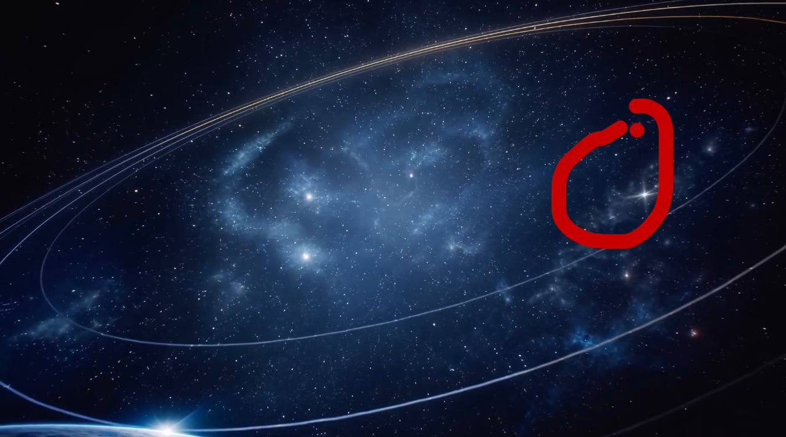
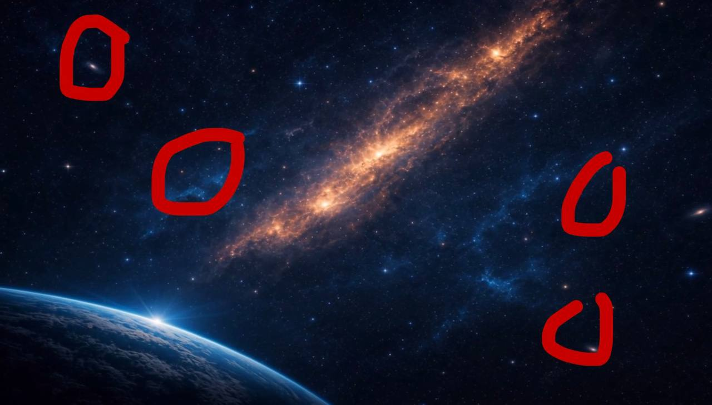
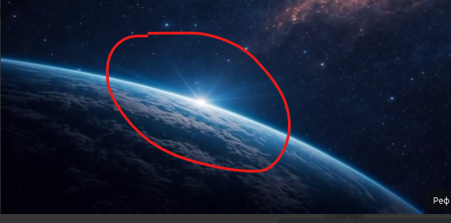
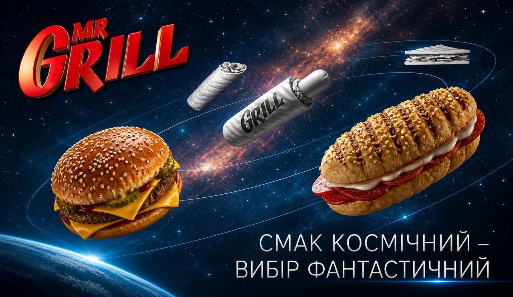
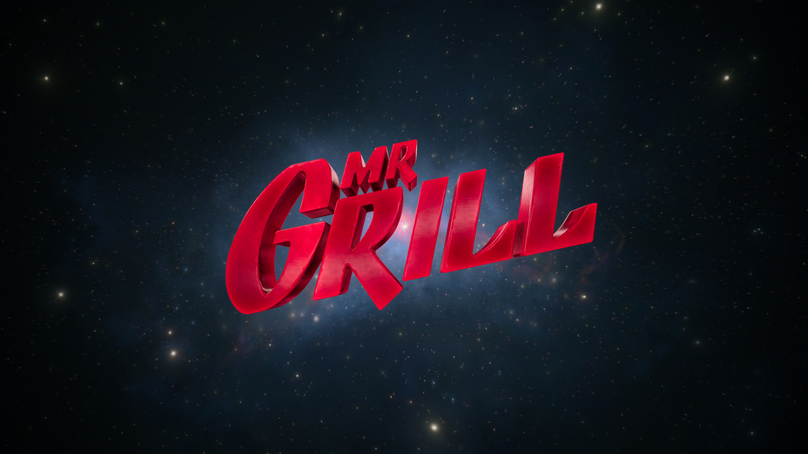
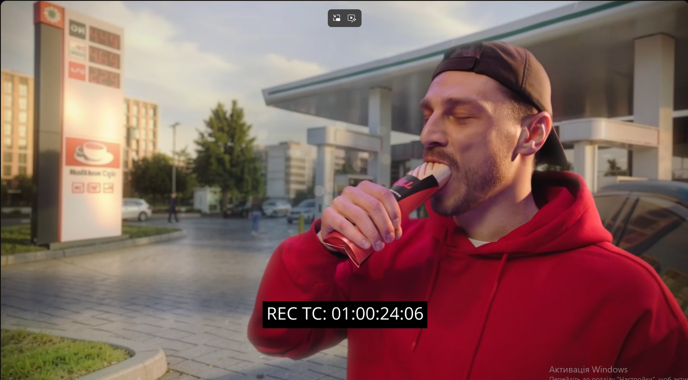
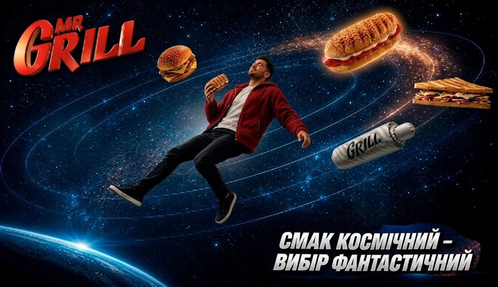

Реф 2 — головний опорний візуал
композиція · світло · кольори · газові хмари
Загальний вигляд космосу
Стосується SH_001 · SH_002 · SH_012 · SH_013. Беремо Реф 2 за основу композиції, освітлення й настрою. Усі правки нижче спрямовані на те, щоб привести ці шоти ближче до головного рефа.
Коментар клієнта
Прямий текст, як був отриманий — про загальний вигляд космосу.
01
Просимо додати крупніші та дрібніші скупчення зірок, окремі небесні тіла та мерехтіння, яке створюватиме ілюзію руху й життя в космосі. Реф 2 прошу вважати опорним.

01 Референс мерехтінь і скупчень зірок

02 Приблизне місце розташування додаткових елементів
02
Просимо звернути увагу на точку підсвіту Землі в реф 2 — наразі вона виглядає «мертвою». Потрібно додати дію: прискорення / сповільнення світла, пульсацію або іншу динаміку. В одному з попередніх варіантів це вже було реалізовано вдало.

Точка підсвіту Землі
03
Щодо кілець — їхня кількість зараз надмірна. Зверніть увагу на реф 3 (генерація AI) — прошу вважати візуал по кільцях опорним. Також не потрібно вибірково підсвічувати кільця золотом.

Реф 3 опорний по кільцях
04
Жовте сяйво залишаємо як основу. Жовте сяйво в центрі композиційних елементів космосу максимально відповідає нашому попередньому рефу, тому його просимо зберегти. Так само залишити газові хмари навколо нього.
05
Ілюзія глибини зараз добре створена за рахунок крупності небесних тіл, але хотілося б додати динаміку блиску: збільшення / зменшення інтенсивності світіння. Можливо, рух земної кулі…
SH_001
Поточний preview зверху. Нижче — 4 етапи шота, один за одним за скролом.
SH_001 · поточний previewджерело: preview/SH_001_preview.mov
01
Початок · лого

Поточний кадр · поява лого
space_logo_v4_01_OK
Коментар по етапу
Загалом виглядає ок. По фіналу треба відрендерити в потрібній якості. Космос на цьому етапі не міняємо.
02
Транзішн у космос з продуктами
Реф 1 Сцена 1-2 · прискорення від лого до кольорової галактики
Реф 2 Сцена 2 і 3 · ефект прискорення
Коментар по етапу
Ідеальний варіант прольоту до наступної частини. Обидва рефи — опорні; використати їх як орієнтир для динаміки та відчуття прискорення.
03
Космос з продуктами
Реф 3 · опорний візуал
стиль космосу + кільця
Коментар по етапу
Головна поправочка: зберігаємо космос у тому самому стилі, що був прописаний у розділі «Космос — загально». Транзішн по кольорах підганяємо під нього.
Додатково
Лого у верхньому лівому куті — НЕ додаємо. Воно не потрібне.
Побажання · мінор
Додати ефект розтягування продукту після транзішну, щоб виглядало космічно.
04
Транзішн на землю
Реф 1 Сцена 3-4 · перехід від стратосфери до землі

Реф 2 Сцена 4-5 · прилетіли з космосу на землю
Коментар по етапу
Ефект швидкого переходу до землі. Реф 2 — варіант перебивки через хмаринки для більш плавного транзішну.
SH_002
Поточний preview зверху. Нижче — специфічні правки по шоту.
SH_002 · поточний previewджерело: preview/SH_002_preview.mov
01
Локація · заправка

Кадр зйомки · герой на заправці
REC TC: 01:00:24:06
Коментар по шоту
Тут ми робимо ту ж заправку. Це шот плавного переходу з SH_001 — вони, напевно, будуть об'єднані.
SH_012
Поточний preview зверху. Нижче — опорний реф і коментар клієнта.
SH_012 · поточний previewджерело: preview/SH_012_preview.mov
01
Головний реф
Реф · сцена 15 · перехід від землі до космосу
вайб заповнення космосу з героєм
⚠ Важливо!
Космос у цьому шоті має бути схожим на наш основний (див. розділ «Космос — загально»).
Коментар по шоту
Ідеально, якщо вийде зробити такий же вайб заповнення космосу з героєм.
Додатково
Ефект розтроєння з рефу — НЕ беремо.
SH_013
Поточний preview зверху. Нижче — 3 етапи: композиція, рух камери та бажаний вайб.
SH_013 · поточний previewджерело: preview/SH_013_preview.mov
01
Головний реф по композиції

Реф по композиції · герой у центрі, об'єкти їжі навколо
лого Mr.Grill — лівий верхній кут
⚠ Важливо!
Космос лишаємо як наш основний (див. розділ «Космос — загально»).
Коментар по композиції
Навколо персонажа існують у космосі об'єкти їжі. У лівому верхньому куті — лого Mr.Grill.
02
Рух камери
Реф 1 · варіант руху камери
подобається клієнту
Коментар по етапу
Це варіант, який подобається клієнту, але який монтажно навряд ляже для пекшоту.
Додатково
У цю сцену точно треба буде додати dolly out.
03
Вайб, якого хотілось би*
Реф · сцена 16 — пекшот · інтеграція людини в космосі
затверджений по вайбу
Коментар по етапу
Основний першопочатковий реф, який затверджували по вайбу. Тут класні волюми по передньому плану, багатошаровість космосу і непогано відтворена фокусна відстань, яка метчиться класно.